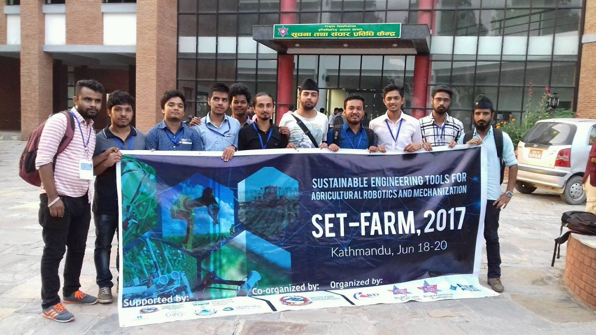

SET- FARM 2017

Centre for Applied Research and Development (CARD) and Institute of Engineering ERC Dharan have been organized
3 days summer school on “Sustainable Engineering Tools for Agricultural Robotics and Mechanization ~ SET FARM
– 2017” and Workshop. Summer school had been facilitated by the three professors from Washington State
University, United States of America and other Nepalese researcher. Interested engineers and students had
participated from all over the country. We have participated in the event.